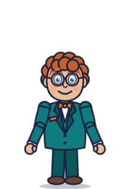
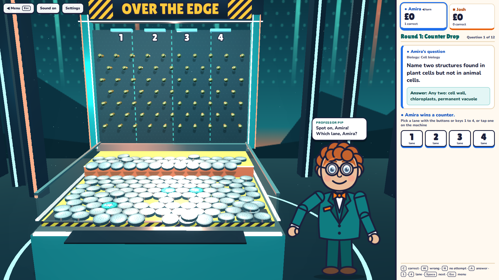
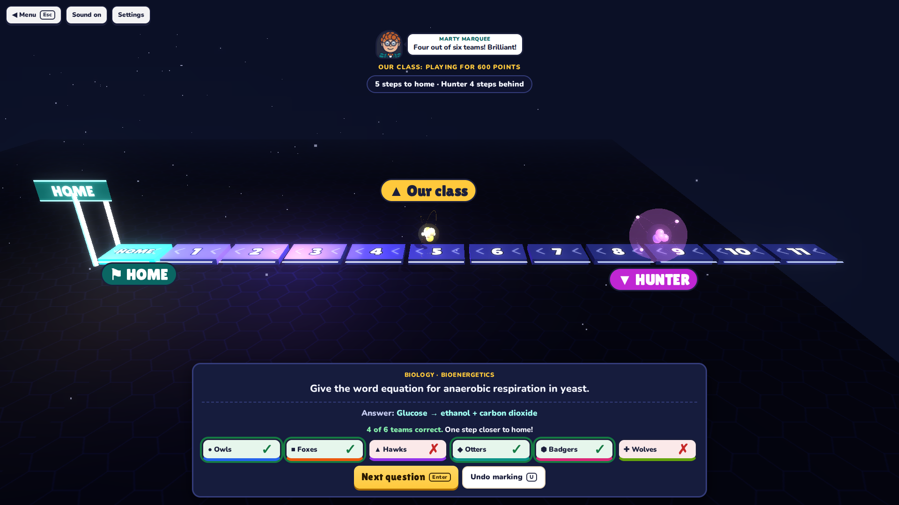
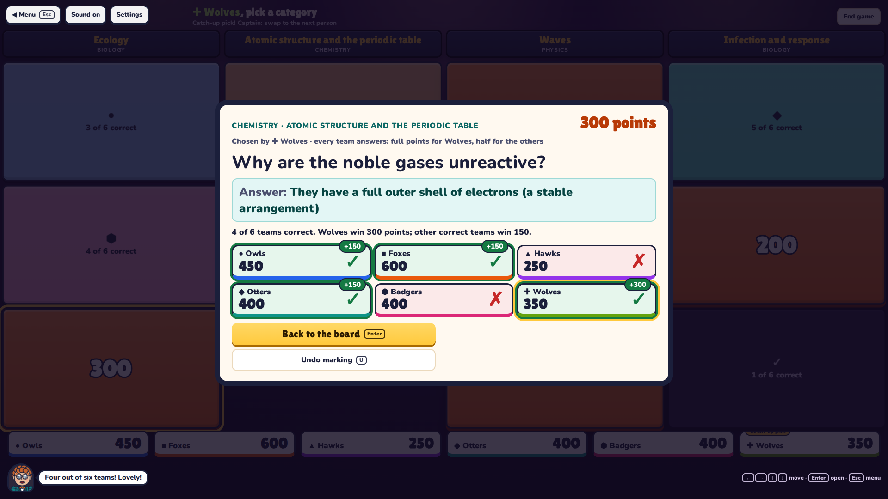
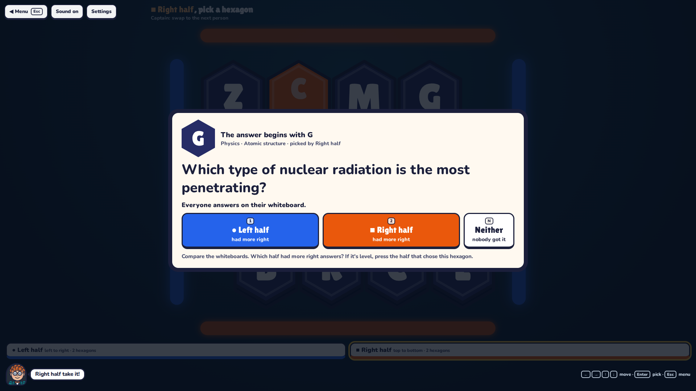

Four whole-class revision games, inspired by classic TV quiz formats. One file, no internet, no logins, no installs.

Each correct team drops a counter down a lane; whatever it pushes over the edge is theirs. In the final the whole class plays for the £5,000 jackpot.
The class is one runner. Pick a deal, answer your way home before the Hunter catches you, then beat the 90-second Final Sprint.
Teams take turns to pick a category and points value; everyone answers. Harder questions are worth more, and one hidden ★ tile is worth double.
Two halves of the class race to link their edges across a board of lettered hexagons. Each letter is the first letter of the answer (for a number, of the number said in words: 1236 is "one thousand", so O).
Teams answer on mini whiteboards: no pupil devices needed. Topics a team gets wrong come round more often.
Each game takes about 10 minutes (Maths longer). P pauses, F is full screen. End game goes straight to the results. Every game ends with Reteach these: the questions most teams got wrong, with answers and topics, to plan your next starter. Nothing is recorded about individual students.




Open Question bank, name the set, paste your questions in this format and press Save as new set:
Subject: Chemistry Topic: Bonding Q: What type of bonding is in sodium chloride? A: Ionic Accept: Ionic bonding Q: Give two ways to increase the rate of a reaction. A: Any two: increase temperature, concentration or surface area, add a catalyst Note: Not "heat it up" on its own
Large text suits the back of the room. Reduced motion turns off camera moves, shake, confetti and flashes. Graphics: Low suits older PCs. Music plays on the main screen only.
No data leaves the computer. Showtime makes no network connections: no analytics, tracking, accounts or adverts. Question sets, team names, history and settings stay in this browser only, and the school stays in control under UK GDPR. If you use pupils' names, treat backup files like any file containing pupil data, or use team names or initials.
| Problem | Try |
|---|---|
| The file opens as text or in a preview | Copy it to your computer, then double-click it. Email and OneDrive previews cannot run it. |
| "3D graphics are switched off", or it is jerky | Set Graphics to Low, close other tabs, or try another browser. Ask IT to turn on hardware acceleration. |
| My question sets have gone | Sets live in one browser on one computer. Private windows and some school log-offs clear them: keep a backup file. |
Showtime: Classroom Gameshows © Rob Pearce. Licensed for use in one teacher's classroom. A School Licence covers up to 25 colleagues. Please don't share or resell.
Showtime: Classroom Gameshows, version 1.8.1. Every edition has the four games and your own sets; only the built-in packs differ (its name is in About). Game design and question packs by Rob Pearce. The games are original works inspired by classic TV quiz formats and are not connected with any television programme or broadcaster. AQA is a registered trade mark of AQA Education and Edexcel of Pearson Education; the built-in packs are AQA-style and Edexcel-style practice questions written for Showtime and are not endorsed by AQA or Pearson. Built with three.js (MIT); fonts Lilita One and Nunito (OFL 1.1): licences in About.